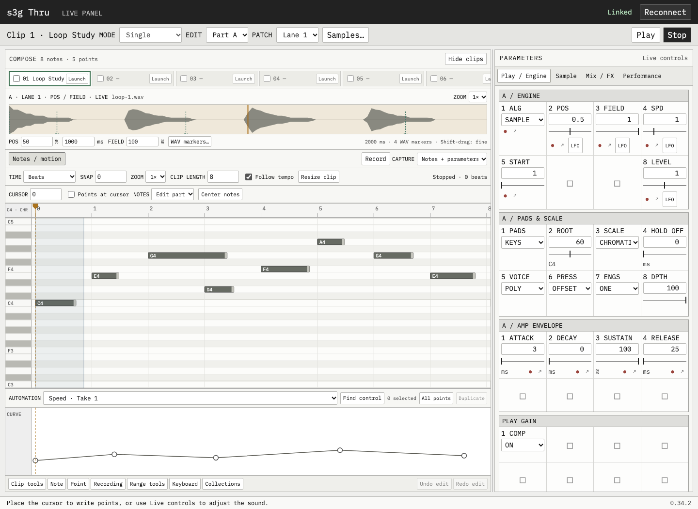
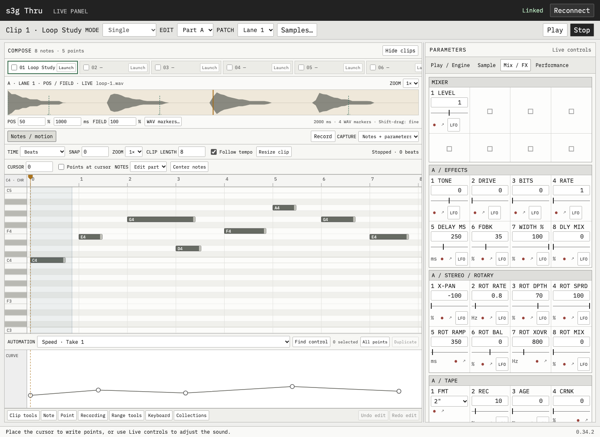
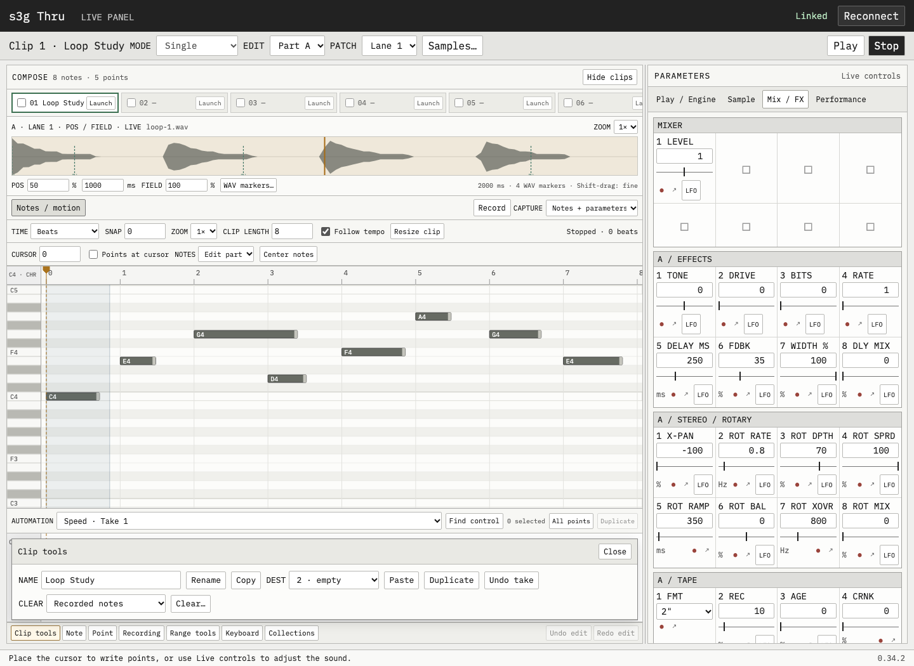
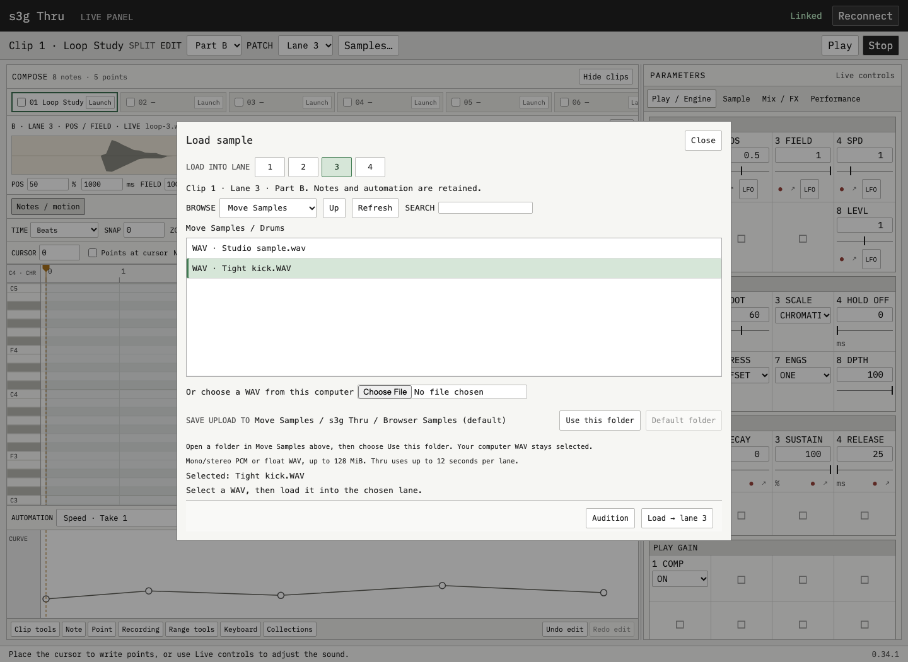
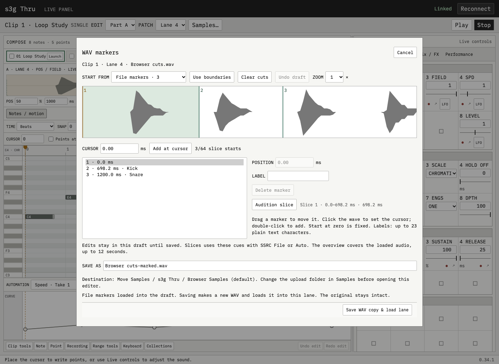
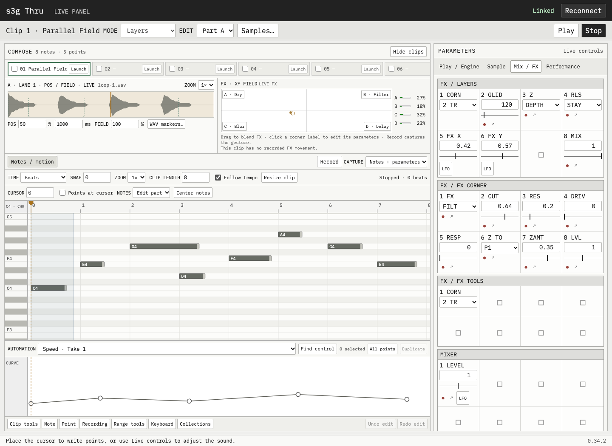
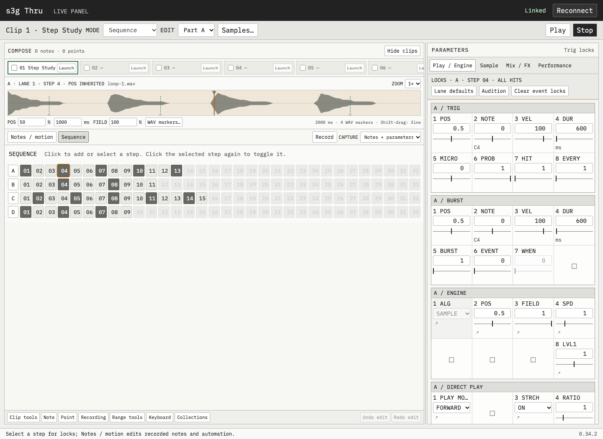

Control · record · compose
Browser live panel
Use a computer as an extended control panel for the running instrument. For recorded performances, the piano roll and automation graph stay together in the left editor, with the selected menu group in a separate panel on the right. Sequence mode has its own four-lane step view. Controls keep their Move names and eight-control order. Sliders and value fields adjust the active Move clip directly. The Clips workspace edits recorded notes and parameter motion alongside the instrument panels.
Available in s3g Thru 0.34.0 and newer.
Open the panel
- Open s3g Thru takeover on Move and leave it running. Connect your computer to the same network.
- On the computer, open Thru’s live panel directly. This is the recommended route. If
move.localdoes not resolve, replace it with Move’s IP address, keeping:7700and the rest of the URL. - Keep only this live-panel tab open. Close any Schwung Manager Remote UI / Tool tab after opening the panel.
- Wait for Linked in Thru’s panel. The header shows the current clip, mode and editing part.
You can also open Schwung Manager, visit Thru’s module detail page, and click Open web UI: Tool. That link appears when Manager detects Thru running. It opens the same panel. The direct address is:
http://move.local:7700/api/remote-ui/module-assets/s3g-thru/web_ui.html?schwungStandalone=1&tool=1Manager also embeds the panel under Remote UI → Tool. Use the direct panel when checking audio timing. Older Thru testing builds can show rising WORK MISSES while that embedded tab is open, even without notes; closing it and using the direct address avoids those extra queries. This does not require changing the clip or its effects.
After installing an updated Thru tarball, exit and reopen Thru on Move, then reload the browser tab with Cmd/Ctrl + Shift + R. This refreshes the browser editor to match the installed module.
No Schwung modification or external controller setup is required. If you use an IP address for Manager, use that address for the panel too. Keep one live-panel tab open.

Composition layout
On a computer, the editor and parameter menus share the window. The piano roll and automation graph remain visible while you change menu groups or scroll through controls. Drag the divider to give either side more room; the browser remembers the parameter-panel width.
Choose Play / Engine, Sample, Mix / FX or Performance at the top of the parameter panel. Each group scrolls independently. Compact panels retain the same control text and sliders with less padding. Find control selects the correct group, part, patch or FX corner for a recorded curve. Show curve returns to the notes and automation editor.
| Editor control | What it opens |
|---|---|
| Notes / motion | Recorded notes, the time ruler and parameter breakpoints. Both the notes and automation graph share the same horizontal scroll position. |
| Sequence | The authored four-lane step editor, available in Sequence mode. Selected-step locks appear in the parameter panel. Returning to Notes / motion selects lane defaults again. |
| Show / Hide clips | The compact clip strip at the top of the editor. |
| Clip tools | Names, copy/paste, duplication, take Undo and separate clear commands. |
| Note / Point | Exact fields for the selected note or breakpoint. |
| Recording | Parameter arms and recording options. Record and CAPTURE remain above the editor. |
| Range tools | Time-range selection, transforms and repeats. |
| Keyboard / Collections | The browser note keyboard or .thrupack file tools. |
In Sequence, click an empty step to turn it on and select it. Click a different lit step to select it for parameter locks. Click the selected step again to toggle it off or on; it stays selected and keeps its locks. Right-click toggles a step directly. Audition and Clear event locks remain separate actions.
Tool drawers open over the editor without moving its contents. Close a drawer with its Close button, its tool button, Escape or a click outside. Undo edit stays available on the lower toolbar. On smaller screens, Editor and Controls switch between the two panels while retaining the editing cursor and selected control.
Adjust the instrument
| Control | What it does |
|---|---|
| MODE | Choose Single, Split, Shared Dual, Quad, Bank, Layers or Sequence for the current clip. Uses the same mode change as Move, stops playback and retains the clip’s mode-specific settings. Finish recording or a clip transition before changing mode. Changes on Move update this selector. |
| EDIT | Selects the part being edited on both Move and the browser. Changing part on Move also changes the browser’s panels. |
| PATCH | Selects the physical patch lane for synthesis engines in modes that use several patches per part. Other patch values remain intact. |
| Slider / number | Adjusts a continuous parameter. A thin line marks the position, and the value box follows the slider throughout a drag. Enter an exact number and press Enter or leave the field to send it. |
| Selection list | Chooses an engine, method or other named value. Available engine pages follow the selection. |
| ENGS / VOICE ENGINES / VOICE SETUP | Choose One or List on Pads & Scale. List reveals its engine slots and setup controls: traversal order, assignment, selected entry, octave, source/stack offsets, pan and pressure depth. Entries follow the mode: 8 in Single/Layers, 4 per part in Split/Shared Dual/Bank, while Sequence keeps lane-level engines. The header identifies the current list entry. |
| Play / Stop | Operates Thru’s existing clip transport. |
| Square | The control is reserved, unavailable for this engine, or edited on Move. |
Changing a supported control on Move updates its browser value. Browser edits use the same parameter handling as Move’s controls; held voices respond according to their engine. Ordinary value updates leave the panel in place while you work.
The active clip and mode follow Move. During a clip change the panel waits for the matching clip state, discards unsent edits for the previous clip and then resumes automatically. Use the clip strip to launch clips, or select them on Move. Use Samples… to browse or upload lane samples. Use Move for loading individual Bank pads, detailed Bank and Layers editing, managed file operations and project management. LFO pages and assignment from individual controls are available in the browser. Sequence Lane, Setup and recipe value panels are available when Sequence mode is active. Action controls such as Print and Regenerate remain on Move.
Record from the browser or Move. Supported recorded parameter values follow playback in the menu panels. Existing Sequence locks and LFOs retain their normal behavior. Edits are part of the active project; wait for Thru’s Saved indication before powering off.

Clips and recorded notes
The strip contains the project’s 64 clips. Each tile shows its name and mode; Launch selects it on Move. The checkbox selects a clip for collection export. Selecting the checkbox does not launch the clip.
| Control | What it does |
|---|---|
| NAME / Rename | Names the active clip, using up to 40 letters, numbers, spaces, hyphens or underscores. An empty name restores the numbered label. |
| Copy / DEST / Paste | Copies a complete clip and pastes it into the destination. This includes its sound settings, sample assignments, authored Sequence and recorded performance. |
| Duplicate | Copies the active clip into an empty destination. It refuses an occupied destination; use Paste when you intend to replace one. |
| Undo edit | Restores the most recent supported edit. This is one edit of history. Curve and note edits restore without reloading samples. |
| Undo take | Removes the newest overdub take while retaining earlier notes and parameter recordings. |
| Clear… | Separately clears recorded notes, parameter recordings, both, or the authored Sequence. The confirmation identifies what will be removed. Samples remain assigned. |

The piano roll follows the current part’s Pads & Scale root and scale. It shows only available scale degrees; Chromatic offers every MIDI note. New notes, pitch dragging, the Note picker and the browser keyboard follow that scale. Changing the root or scale on Move refreshes the rows automatically. Existing out-of-scale notes remain visible as dim rows so they can be moved or deleted without changing the recording automatically. In All parts view, rows include the parts’ combined scales, but new notes still follow the editing part. A playing browser-authored note lights a matching pad in its part when that pitch is available in the current pad octave. Its light releases with the note. The piano roll shows recorded performance with one row per available pitch. NOTES follows the editing part, or shows all parts together with different note colors. Center notes brings the active pitches into view. Scroll vertically for the full pitch range, or resize the browser window to give the editor more height. Double-click a pitch row to add a note, drag a note to move time and pitch, or drag its right edge for duration. This is separate from the authored step Sequence below. Open Note on the lower toolbar for the selected note’s exact start, duration, MIDI note and velocity. ENTRY chooses its Engine List slot or the lane engine. Piano-roll edits allow at most eight overlapping note durations across all parts, including notes held across the clip boundary. Edits, range operations and clip resizing that exceed this limit are rejected without changing the clip. This counts authored notes; release tails and live playing still use the normal voice allocator.
Space toggles Play / Stop. Delete / Backspace removes the selected note or breakpoint. Enter opens its inspector; in an inspector, Enter applies the typed fields. Enter also commits a typed menu value or clip length. These shortcuts leave text editing alone, and note editing is disabled during recording.
TIME switches between beats and milliseconds. SNAP 0 keeps free timing; another value snaps to that many displayed units. For example, 0.25 in Beats is a sixteenth note. ZOOM 1× fits the whole loop in the editor. Larger settings expand the shared time axis horizontally. CLIP LENGTH sets the entire clip’s duration. Enter the length in the selected TIME units and choose Resize clip, or press Enter. There is no separate loop region inside the clip. Lengthening retains existing event times; shortening asks for confirmation, wraps event starts into the new length and caps long notes. Follow tempo makes playback track the project tempo. The clip’s recorded tempo supplies the timeline’s beat ruler.
Load samples from the browser

Available in 0.34.1 and newer. Select the clip and editing part, then choose Samples… in the top bar. Choose Lane 1, 2, 3 or 4 in the popup. The target label shows which part uses that lane. You can replace another part’s lane without switching the editing focus. Individual Bank pads are loaded on Move.
- Choose Move Samples, Thru Recordings or Thru Process. Open folders, use Up to go back, and search the current folder. Select a WAV. Previous files and Next files page through long folder listings; these buttons are hidden when all entries fit. They do not change lanes.
- Alternatively, choose a WAV from your computer. To choose where it is stored on Move, open an existing folder under Move Samples, then choose Use this folder. The SAVE UPLOAD TO line shows the destination, and your computer file stays selected while browsing. Default folder returns to s3g Thru/Browser Samples. Mono or stereo PCM and float WAV files are supported, up to 128 MiB per upload. Thru loads up to 12 seconds into a lane, as when loading on Move.
- Choose Audition to hear the selected WAV through Move’s sample-preview path, using its Preview Level and route. Stop audition ends it early; choosing another sample or closing the popup also stops it. Audition leaves the lane’s audio, clip data and Undo unchanged, and computer auditions do not save a library copy. Check the clip, part and lane shown in the dialog, then choose Load → lane or Upload and load → lane. A progress indicator stays visible while Move loads the audio. The sample name and waveform update after loading.
Loading replaces that lane’s sample in the active clip. Sequence trigs, recorded notes and parameter motion are retained. Uploaded samples are kept in the chosen Move Samples folder, or Samples/s3g Thru/Browser Samples by default using the original filename. An identical repeat upload reuses its file; different audio with the same name gets a numbered suffix such as kick-2.wav. They remain available after closing the browser and are included as referenced assets in project exports.
If the part uses Live Memory, the dialog offers Switch Part A/B/C/D from Live Memory to File after loading. Leave it checked to hear the new file. Uncheck it to assign a file while keeping live processing active. Finish recording and clip transitions before loading. If you change clip, part or mode while choosing, close and reopen Samples to confirm the new destination. An invalid WAV reports an error and keeps the previous lane audio.
Samples loaded inside Thru on Move also update the linked browser’s sample name and waveform. Hold Shift and press Track 1–4 to choose a lane’s sample, then press the main encoder to load the highlighted WAV. Native Move’s instrument sample chooser is separate from Thru.
Sample position waveform
The sample overview follows the editing part and selected physical lane. POS is the amber marker; the shaded region shows the centered, edge-bounded FIELD window used by the lane display. Click or drag the waveform to adjust POS. Hold Shift while dragging for finer movement. Enter exact percent or milliseconds beneath the waveform. Arrow keys move by one millisecond; Shift + an arrow moves by 0.1 ms. Home and End select the sample edges. FIELD can be entered as a percentage.
ZOOM enlarges the cached overview around POS; the small horizontal slider moves the visible area. It uses the existing sample preview, so zoom does not add waveform detail or scan the audio again. Sample-based controls appear only when relevant; unavailable sources show a reason. Live Memory uses its own memory-window controls.
The target label identifies the part, lane and editing scope. With a Sequence step selected, dragging writes that trig’s POS lock; Clear POS lock restores its inherited position. Other active trigs appear as dim markers: click one to select its step. With Points at cursor enabled, dragging writes POS automation at the edit cursor. Otherwise it adjusts the live position. FIELD describes the sample window, not the trig’s DUR in milliseconds.
For a Sequence lane using Slices, select a step to see SLIC on TRIG and BURST. Choose its number in the menu or the waveform selector, or click a region on the waveform. The selected slice is highlighted with its label and source duration. Clear SLIC lock restores inherited selection. See Sequence slice locks.
WAV marker editor
Available in 0.34.1 and newer. The sample overview shows embedded WAV markers as thin green dashed ticks. These are separate from the Sequence trig triangles. Choose WAV markers… beneath the waveform to edit the selected lane’s file markers.

- The popup opens with the file’s saved markers. If none are available, it starts from Edited slices, then Detected transients. The selected START FROM source matches the displayed draft; each choice shows its available start count. To replace the draft, choose another source and press Use boundaries. Undo draft restores the previous boundaries. If no extra onsets were detected, add markers manually. Clear cuts returns to one start at zero.
- Click the waveform to set the cursor, then choose Add at cursor. Double-click also adds a marker. Select a marker in the list or drag its line. POSITION accepts exact milliseconds; press Enter to commit a typed value. The first start remains at zero. Up to 64 slice starts are available.
- Name slices with LABEL, or delete the selected interior marker. Labels use up to 23 plain text characters. Undo draft reverses local edits. Zoom and the scroll slider enlarge the cached overview; exact positions remain available in the numeric fields.
- Choose Audition slice to hear the selected start through to the next marker, or the audio end for the last slice. The shaded waveform region and the start/end/duration readout show what will play. Audition uses the current draft, including unsaved moves, through Move’s Preview Level and route. It plays once, with short fades at both edges. Stop audition ends it early. Selecting another slice, editing boundaries, saving, closing or changing the source stops the preview. Audition leaves the lane, clip data and Undo unchanged.
- Set SAVE AS and choose Save WAV copy & load lane. The destination follows the upload folder selected in Samples. The new WAV stores the markers and labels inside the file, and loads into this clip’s lane. The original stays intact. Cancel discards the draft.
The editor covers the audio loaded into the lane, up to 12 seconds. Saving copies the original WAV audio bytes without resampling or changing its bit depth; audio beyond the loaded window is retained. The saved marker set describes the edited window. Clip notes, Sequence trigs and parameter recordings remain in place. If the source, lane or clip changes while the editor is open, cancel and reopen it before saving.
Slices uses embedded markers when SSRC is File or Auto. Auto prefers a clip’s Edited map when one is present. Loading the marked copy clears the lane’s old clip boundary map, so its file markers can be used. The lane’s pre-roll setting is retained. Cutups can use them with RSRC File on Cutups Clock; Texture uses RSRC File on Texture Source. Both also offer Edited and Auto sources. Markers guide new cuts or events while existing ones finish. Other playback engines retain their own region and position controls. See Slice Source.
Layers FX field

In Layers mode, the sample overview sits beside an FX XY field. Drag to blend the four FX corners. The filled marker follows the current smoothed FX blend; the outlined marker shows the current target. Corner labels show the assigned effects; click a label to select that corner and open its Mix / FX controls. Arrow keys move through the field; Shift makes smaller moves.
Use Record to capture XY gestures, with CAPTURE set to Parameters or Notes + parameters and the required controls armed. Move’s Record button uses the same recorder. FX-only clips can process notes played live. While recording, the field identifies Notes-only capture when FX is excluded. The field shows how many FX points the clip contains and identifies a live override of replay. A clip with no recorded FX points cannot replay field movement. Switch to Live controls before performing in the field; cursor-point editing remains a separate operation.
Write automation at the cursor
- Click or drag on the time ruler, or click empty piano-roll space, to place the amber edit cursor. You can also enter an exact CURSOR time. Ruler arrow keys move by the current Snap interval; Home and End go to the loop edges.
- Points at cursor becomes checked. Focus a Play / Engine, synthesis or supported effects control. Its named curve appears beneath the notes, including when it has no points yet.
- Adjust the control in its normal menu box or slider. Thru writes a breakpoint at the edit cursor. Moving the same slider repeatedly updates that point; it does not fill the clip with points. A new curve keeps its initial value at time zero.
- Move the cursor and adjust again to build the curve. At each cursor position, menu values show the automation value there. Choosing a breakpoint also moves the edit cursor, so the menu can edit it directly. Click empty space in the automation graph to deselect the breakpoint and move the edit cursor. Delete then leaves the curve unchanged; double-click empty space to add a point.
- Choose Live controls, or uncheck Points at cursor, to return to ordinary sound adjustments. Recording and Sequence-step locking use their own editing targets.
The amber cursor is an editing position; it does not seek or stop the audio. The green cursor follows actual clip playback. While writing points, the sticky target strip above the menu panels shows the destination and time. Its CURSOR field lets you advance to another time without returning to the roll; Show curve returns to the graph.
Cursor writing edits clip automation without changing the instrument’s starting setting. Play hears that automation. Unsupported settings are disabled in this view. Edits inside a touch-overdub interval update that interval’s take, so the point is audible there. Undo edit restores a complete slider gesture. No performance recording is needed to place points.
Record notes and parameter motion
- Choose Notes, Parameters or Notes + parameters under CAPTURE.
- Open Recording to leave All parameters checked, or use the small arm button under individual controls to select specific recording destinations. Clear arms deselects them all.
- Press Record. Play Move, an external keyboard, or the browser keyboard; move the supported instrument controls. An empty clip begins with a four-beat loop.
- Press Finish take. Playback continues with the new take. Undo take removes it.
Browser recording uses overdub and retains earlier takes. Continuous sound controls use touch overdub: the new gesture owns the interval while the control is being adjusted, then earlier automation resumes. The shaded bands on a curve show these intervals. Choice controls, engine changes, Sequence structure and held gestures such as Layers movement retain their normal latching behavior. Touch intervals and takes survive saving and collection export.
Browser recording shares Thru’s existing performance recorder. Its capture selection also applies when recording is started from Move while the browser is connected. This is separate from recording audio into samples. Choose Lane defaults before recording gestures; a selected Sequence step edits locks instead. Releasing a browser key, changing editing context, or leaving the tab releases browser-held notes.
Curves and range tools
Shift-drag blank automation space to select several breakpoints, Shift-click a point to select an interval from the current point, or Ctrl/Cmd-click points to add or remove them individually. All points selects the displayed curve, up to 256 points per operation. Drag a selected point to move the selection in time and value. Open Points for exact TIME Δ, VALUE Δ and STRETCH fields; stretching is anchored at the earliest selected point. Duplicate places a copy after the selection, separated by the current Snap interval or 10 ms with Snap off. Delete removes the selected points together. All of these operations affect only the displayed curve and take. Points must stay within the clip, parameter range and their take’s shaded ownership intervals. The same limits apply when entering an exact time in Point; a refused edit leaves the original point in place.
Undo and Redo each identify their latest action. Note, breakpoint, selected-point, range and clip-length edits support one level of Redo. A completed multi-point drag or menu-slider gesture is one action. A new edit discards Redo; clip, mode and browser-session changes do not carry Redo into another context. Ctrl/Cmd + Z undoes; Ctrl/Cmd + Shift + Z or Ctrl/Cmd + Y redoes, when a text field is not being edited. Clip imports and recording takes retain their separate Undo controls.
Focus a menu value or slider to select its curve, or use the curve button beneath it. AUTOMATION lists the real parameter name, part or FX corner, synthesis patch where relevant, and take. For example, FX corner B · Filter · Resonance (RES) identifies the corresponding FX menu control. Take 1 is the first recording pass for that control; later overdubs can add further takes. Take numbers distinguish recording passes within the same clip. The list also offers existing recordings. Click a point to select it and place the edit cursor at its time. Drag it to adjust time and value, or open Point for the exact fields. Double-click to add a point. Named choices use stepped values. Find control scrolls to its menu panel. Changes are sent directly to the active clip. If Thru refuses an input route, the panel shows the reason and restores the accepted setting; the connection stays open.
Shift + drag empty piano-roll space to mark a time range, then open Range tools. You can also enter FROM and TO there. Choose whether operations affect notes, parameter motion, and all parts or only the editing part.
| Operation | AMOUNT / COPIES | What it does |
|---|---|---|
| Repeat after | COPIES | Adds copies after the selection, spaced by its length, and extends the loop when needed. Existing destination events are retained. |
| Copy at offset | Displayed time units / COPIES | Adds copies at successive offsets from the source range. |
| Shift time | Displayed time units | Moves the selected events and gesture intervals. |
| Stretch time | Multiplier | Scales timing and note durations around FROM; 2 doubles their spacing and length. |
| Transpose notes | Semitones | Moves pitch without changing timing or parameter motion. |
| Reverse time | Not used | Reverses selected events within the range. |
| Quantize | Grid in displayed time units | Moves event starts and gesture intervals to the chosen grid. |
Whole clip selects the loop. Undo edit restores the previous range. Operations stop at Thru’s note, point, take and loop-length limits; they do not silently discard events to fit.
Sequence editor and parameter locks

In Sequence mode, four rows show lanes A–D and their 32 steps. Dark cells beyond a lane’s Length are unavailable. A green underline follows the device’s timing and traversal between browser updates; a small amber dot marks a step with locks.
- Click an empty step to add a trig and select it. Clicking a lit step selects it without turning it off. Selecting another lane also changes the editing part on Move.
- Check the amber target strip: for example, LOCKS · A · STEP 05 · ALL HITS. Available sound controls now edit that step’s locks.
- Use TRIG for POS, NOTE, VEL, DUR, microtime, probability and cycle conditions. Engine, amp and supported effects controls can be locked from their own panels.
- A locked control is highlighted. Click its × to clear that override and inherit the lane value.
- Choose Lane defaults, or press Esc, to edit the instrument’s starting settings again.
Engine choice, tempo, lane clock and other controls that cannot be locked are disabled while a step is selected. Choose Lane defaults to adjust them. Position controls create a trig POS override; they leave the lane’s base position intact. NOTE shows a root-relative offset and the resulting note name.
| Control or action | What it does |
|---|---|
| Trig on / off | Turns the selected trig on or off while keeping its settings. Right-click a step to toggle it; Delete turns a selected trig off when a value field is not being edited. |
| Audition | Plays the selected trig while the transport is stopped. Editing pitch, position, duration or sound locks also uses Thru’s stopped audition path. During playback, edits affect the next occurrence. |
| BURST / EVENT | BURST sets the number of events. EVENT 0 edits settings shared by all hits; 1–8 selects an individual active event. WHEN places that event within the step, bounded by its neighbours. |
| Inherited highlight | An event is using a lock from its parent trig. Adding a value makes an event override; clearing it restores the parent lock. |
| Clear event locks | Clears the displayed core and sound locks for the selected parent or event. Keeps the trig, Burst timing, other events and probability/cycle settings. |
Manual edits remain overrides in Euclidean and Onset recipes. Sequence data and sound locks are clip content, so they are saved with the project without performance recording. Use Move’s curved Undo key for Thru’s existing edit Undo.
Connection and feedback
| Status | What it means |
|---|---|
| Connecting / waiting | The panel is waiting for Thru’s current state. Controls stay disabled until it arrives. |
| Linked | The current clip and parameter state have been read successfully. |
| Sending | Thru has not yet acknowledged the latest edits. |
| Not linked | Read the message below the panels. A clip-specific state error identifies that clip; you can select another clip on Move without closing the browser. Finish any audio recording or file operation, check the connection, then choose Reconnect. A version mismatch requires reopening the updated module and hard-reloading the browser. |
Disconnecting the browser leaves the live project running with its current settings. Project backups use Projects export and import.
Composition file tools
Open Collections on the lower toolbar to exchange a selection of clips. Check clip tiles, choose Include WAVs for a portable collection, optionally include chains, then Export checked clips. With none checked, the active clip is exported. Export keeps playback running.
Open collection reads a .thrupack archive or composition JSON without changing Move. Select the clips and destination slots. Link WAVs supplies missing files by their content hash. Save collection writes the chosen content to your computer.
Import selected… confirms occupied destinations before transfer. Playback stops while samples load, then the first imported clip becomes active. If Include chains is checked, imported chains replace the project’s chain banks. Undo import restores the project state captured before import. Finish recording and pending edits before transferring files.
Collections carry recorded notes, parameter motion, authored Sequence data and sound settings, with optional audio. They can be written by other tools, including generated JSON, and validated before import. Audio references alone require matching files already on Move or linked WAVs. For a complete project backup, continue to use Projects export and its .thru archive.
See the example composition, schema and sound parameter catalog when creating files with another tool.
node scripts/thrupack.mjs validate composition.json
node scripts/thrupack.mjs inspect composition.thrupack
node scripts/thrupack.mjs pack composition.json output.thrupack
node scripts/thrupack.mjs unpack input.thrupack new-folder